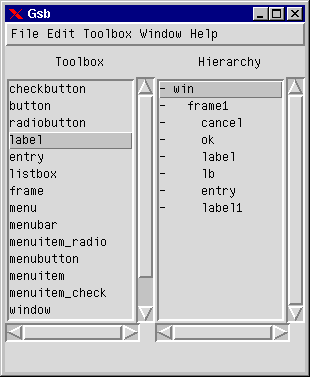
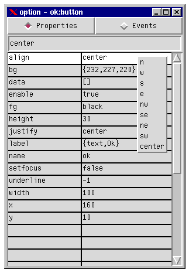
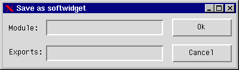

The result of a GSB session is a resource file, which contains information about the GUI. This resource file can be read by GSB and the run-time module gsb_run, which is called from the Erlang program that wants to use the GUI.

FIGURE 1. Main menu with the toolbox to the left and the hierarchy to the right.
The file menu handles projects. A project is a GUI with at least one window and one resource file. GSB can have several projects open at the same time. The menus "Save Project","Save Project as" and "Close Project" each has a cascade menu, where the loaded projects are listed. Select the project you want to save, save as or close.
From the edit menu you can cut, copy, delete or paste widgets. To cut, copy or delete widgets, mark the widgets in the draw area or in the hierarchy and select action. When you want to paste the contents of the clipboard buffer, select paste and click in the draw area where you want the result. This functionality is also present on popup-menus in the draw area.
The toolbox menu manages the toolbox. The toolbox can be saved, and new widgets can be imported. If there exists a widget with the same name as an imported one, the old values be overwritten.
The window menu displays all windows that belong to GSB. When selected, the window will appear, or be opened if it was iconified.
FIGURE 2. A sample draw window of the file dialogue used in GSB with the popup-menu. The window is marked.
Widgets are selected with the left mouse button, a selected widget is marked with a yellow rectangle. To mark several widgets simultaneously, press the 'shift' button and mark the widgets. The right mouse button shows the popup-menu.
The cut, copy, paste and delete functionality in the popup-menu is the same as in the main menu (Section A.1.1). "Center" and "Align" manipulates the marked widgets with respect to position, "Shrink to smallest" and "Grow to biggest" manipulates the marked widgets with respect to size.
The "Grid" menu has two options, "Snap" and "Don't Snap". "Snap" means that the widgets will be placed only on x and y values that are multiples of ten.

FIGURE 3. The option window with the property "align" marked and supporting popup-menu.
The option window has two modes, properties and events mode. The mode is switched by clicking on either radio-button. A option is selected with the left mouse-button (the white row "Align" in Figure 3). There are several types of input possible to options
When two or more widgets are marked from the draw area or hierarchy, the values are compared. An option that exist in all marked widgets are then shown in the option window, and an option that does not have the same value in all marked widget are shown with an italic and bold font. The value shown is the value of the first marked widget. When editing a value, all marked widgets will be affected.
gsb_run module, or be compiled to an Erlang program. gsb_run:start(GS, Filename) where GS is a gs object that will be the the parent for the top widget in the resource file, and Filename is an absolute path to the resource file.
-module(foo). -export([start/1, init/1]). start(GS) -> spawn(gsb_1,init,[GS]). init(GS) -> gsb_run:start(GS, "foo.rc"), loop().Example 1. How to start a resource file
-module(bar). -export([start/1, init/1]). start(GS) -> spawn(gsb_2, init, [GS]). init(GS) -> gsb_run:start(GS,bar), loop().Example 2. How to start a compiled resource file
A resource file is compiled by the call gsb_run:rc2erl(Module) where file and Module is the module that should be produced (i.e there is a resource file namned "Module.rc"). The result will be a Erlang module Module + "_ui". The extension "_ui" is added to differentiate the GUI module from the logic module.

FIGURE 4. The Save as softwidget dialoge
The module is the module that contains the logic for the GUI. The filename of the resource file will be module + ".swr". The exports field is a list of exported options. Options can be either a GS option or a user defined option. A GS option is an option that controlls the GUI, a user defined option is a option that is passed to the logic of the softwidget. GS options have the syntax
{{Name, Type},Default}
Where Name is the name of a widget, Type is the option to be controlled and Default is the value the option will have when a softwidget is controlled. User defined options have the syntax
{Name, Default}
Where Name is an input parameter for the module with Default as default value. Only exported options will be editable from the option window.
Example of a GS option is {{label, text}, "File dialog"}. The user of the softwidget will then be able to change the text of label from GSB. An example of a user define option is {state, load}, where the user can control the state of the loop for a file dialog. State could for example have to different possible values, load and save.
-module(gen_file_dialog).
-export([start/2, init/2, request/0, stop/0]).
start(GS, Opts) ->
Pid = spawn(gen_file_dialog, init, [GS, Opts]),
register(gen_file_dialog, Pid).
init(GS,Opts) ->
case gsb_run:start_sw(GS, gen_file_dialog, Opts) of
{ok, UserOpts} ->
true;
{error, Reason} ->
io:format("gen_file_dialog error: ~p~n",
[Reason]),
exit(error)
end,
{ok, Dir} = file:get_cwd(),
Mode = gsb_run:get_value(mode, UserOpts),
File = gsb_run:get_value(file, UserOpts),
gs:config(entry, {text, File}),
gs:config(gen_file_dialog, {map, false}),
refresh(Dir),
request_loop(Dir, GS, State).
Example 3. A softwidget module
start(GS, Module), searches for a module to start. If there is module namned Module + "_ui" compiled, this will be started, otherwise the resource file Module + ".rc" will be started.
start_sw(GS, Module, Opts), starts GUI in the softwidgets resource file, from the softwidget process (This is important, otherwise name conflict may occur) with GS as the parent of the top widget. Returns {ok, UserOpts} or {error, Reason} where UserOpts are the values that are to be extracted by get_value/2.
get_value(Type, Opts), returns the value of option Type in the list Opts.
rc2erl(Module), converts a resource file to an Erlang program, which can be compiled to a separate module. The result will be a file namned Module + "_ui.erl".
gsb:start().
Choose File/New Window
Select widgets in toolbox, place on draw area
Set correct options
Save resource file
2. Mark the bottom widget.
3. File/Save as softwidget
4. Module is the name of the module that will be called when the application starts
Exports is a list of tuples, either gs options or user defined. The syntax for the gs options are:
{{name, option}, value}
{option, value}
5. The resource file will be saved in "module_ui.rc"
6. Import the created softwidget into the toolbox